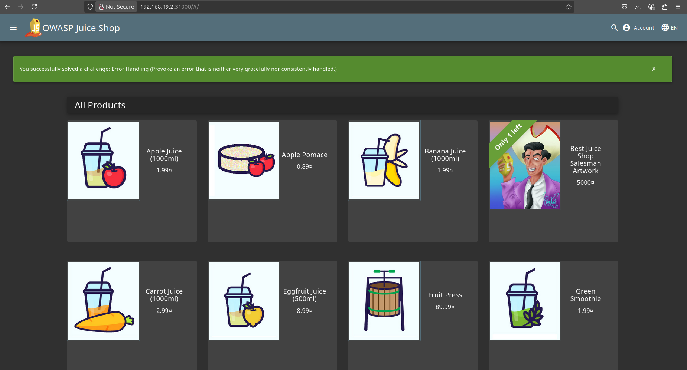
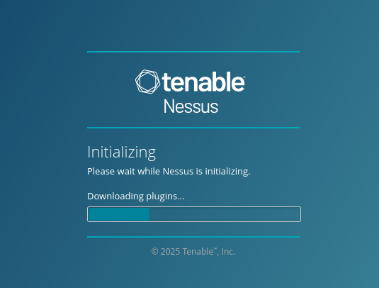
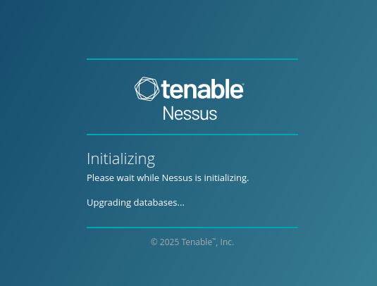
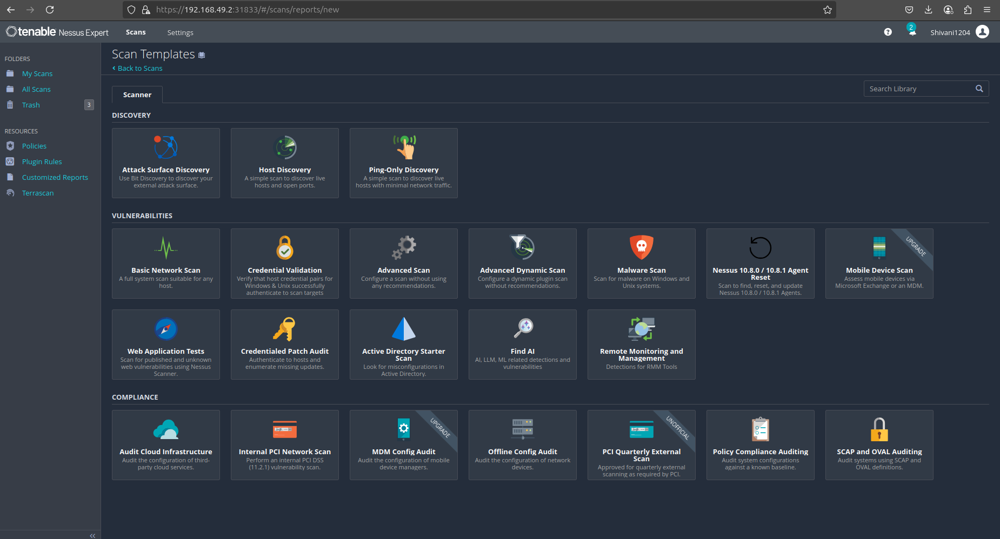
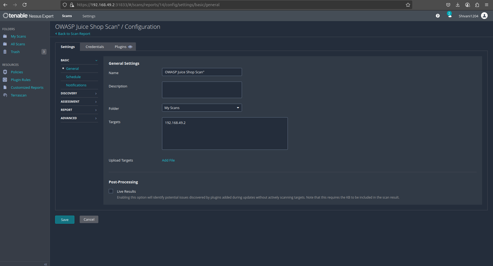
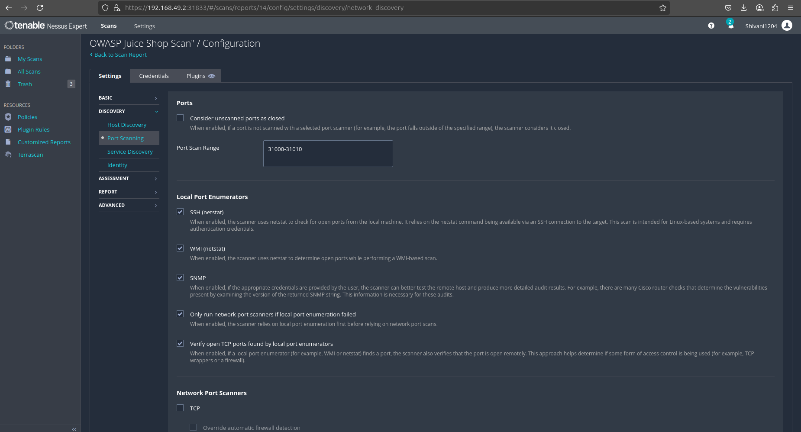
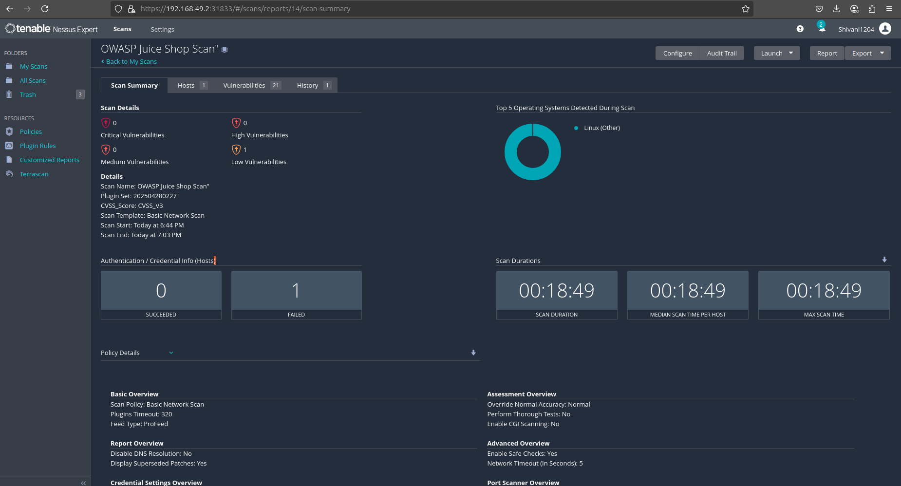
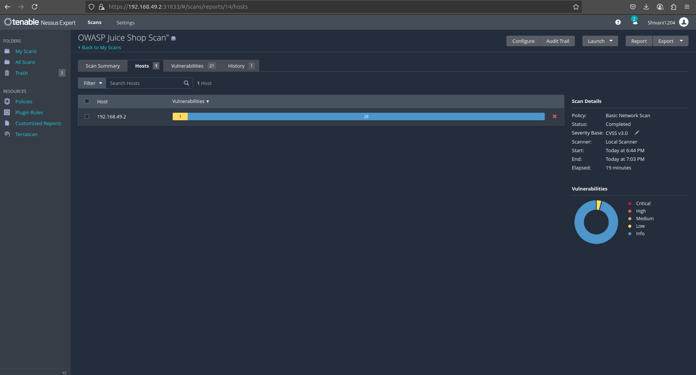
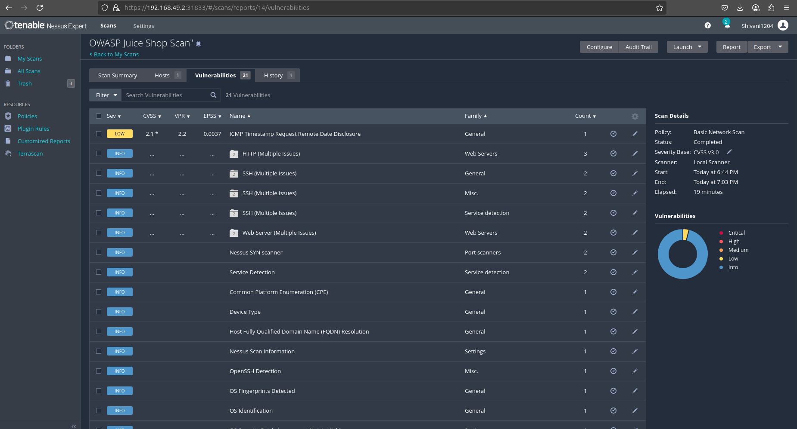
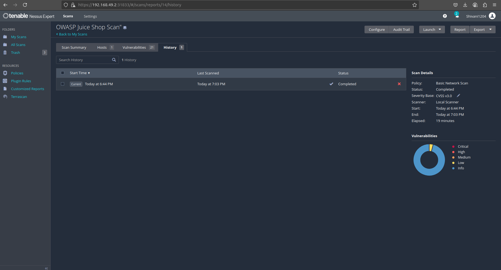

Nessus Vulnerability Scan Instructions
Follow the steps below to perform a vulnerability scan using Nessus on a specific target, such as the OWASP Juice Shop system or any other system you need to assess.
Step 1: Security Warning
- When you see a "Not Secure" warning in your browser, click on the "Advanced" option.
- Then, click on the "Proceed to the site" button to bypass the warning and continue to the Nessus interface.
Website being scanned: OWASP Juice Shop

Step 2: Login to Nessus
- Use the username and password provided to you (or created during setup) to log in.
Step 3: Initialization and Database Upgrade
- After logging in, Nessus will begin initializing and upgrading its database, which can take around 5 to 10 minutes.
- Please be patient while this process completes.


Step 4: Create a New Scan
- Once initialization is complete, click on "New Scan" in the left sidebar.
- Choose the "Basic Network Scan" template (for general network scans) or "Web Application Scan" (for deeper web application vulnerability testing).

Step 5: Detailed Configuration of Nessus Scan
- To ensure the scan targets the specific port (31000) used by your OWASP Juice Shop instance, follow these configuration steps:
- Create a New Scan by going to the "Scans" tab in Nessus and clicking on "+ New Scan".
- Choose the "Basic Network Scan" template (or "Web Application Scan" for more detailed testing).
- Configure the Scan with the following:
- Name: "OWASP Juice Shop Scan" (or any name you prefer).
- Description: Add details here if necessary.
- Targets: In the "Targets" field, enter the IP address of your Minikube instance (e.g.,
192.168.29.107).

- In the "Discovery" settings section, make sure port scanning is enabled and include port
31000 (since that's where Juice Shop is running).
- Under "Port Scanning" settings:
- Enable "Custom ports" and enter
31000 in the custom ports field.
- Alternatively, specify a range like
31000-31010 or even 31000, 8080-8090, 1-1024 to include common ports and the custom port you're targeting.

- If you're using the Web Application Scan template, provide the full URL:
http://192.168.29.107:31000/.
- Configure authentication settings if needed (e.g., if Juice Shop requires a login).
Step 6: Web Application Settings (Optional)
- If you are performing a Web Application Scan, provide the full URL:
http://192.168.29.107:31000/.
- Configure any authentication settings if needed (e.g., if Juice Shop requires a login).
Step 7: Launch the Scan
- After configuring your scan, click Save, and then click "Launch" to start the scan.
Step 8: Review the Scan Results
- Once the scan is complete, you can review the vulnerabilities detected in the OWASP Juice Shop.
- Nessus will categorize the vulnerabilities by severity (High, Medium, Low) and provide recommendations for remediation.
Scan Result Example
Once the scan completes, Nessus will display the scan results, categorizing vulnerabilities and providing necessary remediation steps.



